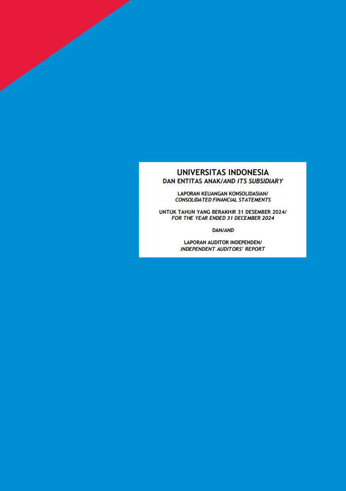

Complete text of Universitas Indonesia Financial Report Archives is available on this link: https://ppid.ui.ac.id/laporan-keuangan-universitas-indonesia/
| Financial Report Portal Example & Reference Benchmark |
|---|
|
 Examples of financial report (Universitas Indonesia, Indonesia)
|